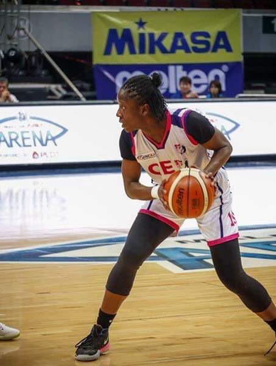

Self Description
My name is Lawan Opeyemi Mercy, hails from Kogi state, born and raised in
Lagos state. I am 6 foot plus tall; I am an athlete; I am a driven and
adaptable individual with a passion for continuous learning and personal
growth. With a background in financial management and currently taking my
master’s in business analytics. My journey has been characterized by a
relentless pursuit of excellence and a commitment to pushing the
boundaries of my potential. My academic achievements include awards earned
like president list, deans lists,etc. I bring a wealth of practical
experience gained from interning as a sport information director
assistant, customer service agent and finance intern. These experiences
have equipped me with a diverse skill set, including analytical skills,
communication skills, statistical skills, decision making skills, to
mention a few. I thrive in dynamic environments where I can apply my
creativity and problem-solving abilities to overcome challenges and drive
meaningful change. Furthermore, I am a natural collaborator who values
teamwork and open communication. I believe in the power of collective
effort to achieve ambitious goals and am adept at building strong
relationships with colleagues and stakeholders. My strong work ethic and
attention to detail ensure that I consistently deliver high-quality
results, even under pressure. Outside of work, my hobbies include cooking,
reading, volunteering, praying, singing, working out, traveling, playing
basketball, to mention a few, which helps me maintain a balanced and
fulfilling life. I am always eager to explore new opportunities and
embrace new experiences that allow me to expand my horizons and contribute
positively to the world around me.
Aspirations and Objectives Regarding Upskill
As a student in this upskill program, I was privileged to come across this
programs’ link on a friends LinkedIn page and decided to sign up as I am
developing love for tech particularly web development and UI/UX. I aim to
enhance my skills and adapt to the competitive tech industry by
continuously learning and participating in hands-on projects and workshops
also attain a certificate by the end of this program and hopefully
continue to learn and broaden my horizon when it comes to tech. I aim to
translate theoretical knowledge into practical expertise, which will
enable me to tackle real-world challenges confidently. I aim to utilize
this upskill program for career advancement, securing new job
opportunities, transitioning roles, or starting entrepreneurial ventures.
I aim to enhance my individual prospects and contribute positively to my
organization’s success and innovation.
Lawan Opeyemi Mercy's relevant social links
Facebook
LinkedIn
Medium
Instagram